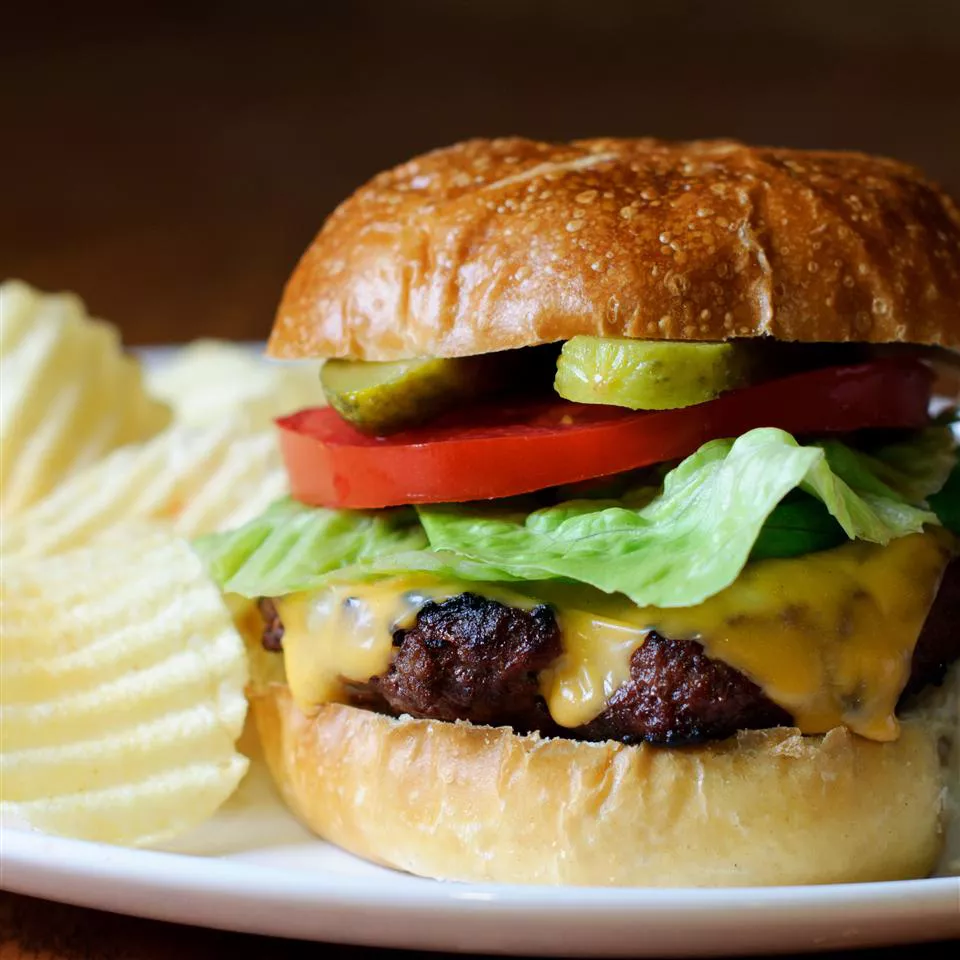
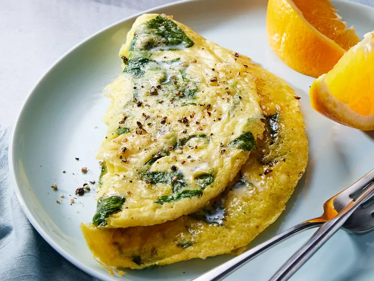

Juicy Lucy Burgers
The famous Juicy Lucy burger is a favorite of Minnesotans. You must use American cheese on this to achieve the juiciness in the middle.
View Recipe
Easy Lasagna
An easy lasagna recipe that saves me lots of time. This dish satisfies everyone in the family. Try it tonight!
View Recipe

Baby Spinach Omelet
Enjoy this spinach omelet with tender baby greens, Parmesan cheese, and a little nutmeg cooked together for the perfect start to the day.
View Recipe